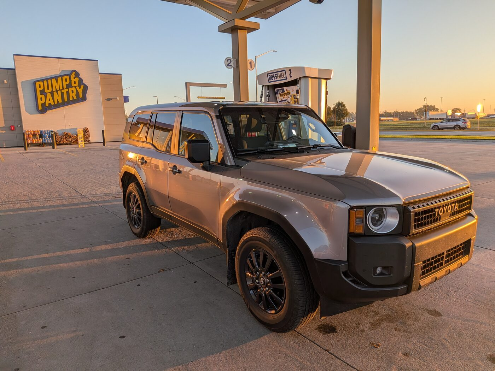

Stop 01
This wasn't the first gas station I stopped at, I was joking when I implied I was going to show you every gas station in America. But this is my favorite gas station, in my second favorite town in the entire US - The Pump & Pantry in Grand Island, Nebraska (Also happens to be my favorite state).